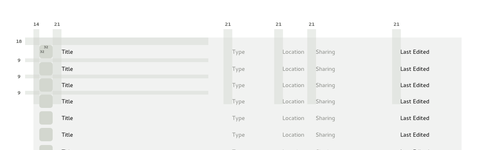

Primary Toolbars
Grid View
An area that contains a grid of images that represent individual items of content. Each item typically has a label beneath it. A scrollbar enables the grid to be moved up and down when the number of items becomes too big for the available space.
When to use
The grid view is one of the principal ways of presenting bodies of content in GNOME 3 applications. It can be used to present relatively small numbers of items or very large numbers. Examples of the grid view can be seen in the Documents, Music, Clocks and Boxes apps.
Since the grid view utilises an image for each item it presents, it is best suited to content that has a visual component. It is also well suited to content where each item has an image that is specific to it, rather than having images that are shared by multiple items of content.
As a general design strategy, it is worth thinking about ways in which you can generate unique images for each of the content items that you want to present. Unique images vastly help identification and can bring life to what would otherwise be a dull or uninteresting application. GNOME Clocks is an excellent example of this - by marrying each world clock with an image of a city, it aids identification and provides a richer experience than would be enabled by text and numbers only.
Guidelines
Be consistent with the implementations found in the core GNOME 3 applications. Ensure that the layout of the grid is the same.
- Order the items in the grid according to what will be most useful to people using your application, as well as conventions for the type of application that you designing.
- Selecting an item in the grid will typically switch to a dedicated view of it.
- Use chunking.
- The standard [[Design/HIG/Search|search]] design pattern should be used to allow people to filter the content of the grid.
Elaborations
The grid view is a flexible pattern that can be elaborated depending on your requirements. The following are a number of optional additions to the grid pattern that can be used:
- Use the checkmark selection mechanism if it is necessary to provide the ability to select and modify items within the grid.
- If the items in the grid have several useful properties, an alternative list view can be provided. Switching between a grid and list view is typically facilitated by a set of radio button items in the app menu .
- Grid views can contain collections.
- "Emblems" can indicate a variety of states, including whether an item is being shared.
- Grid items can display a range of "status information", such as progress or whether they are active. This is particularly useful if the items in the grid have dynamic properties. GNOME Boxes provides examples of a number of these states displayed within the grid design pattern.
- Inactivity can be indicated by …
- Progress can be indicated by …
List View
An area that is populated by a list of items. A list can incorporate multiple columns of both text and images. The list can be vertically scrolled and can be filtered by using search functionality.
When to use
List views can be used to present and give access to bodies of content. They are appropriate if content items have a name or other text-based identifier.
List views often accompany grid views and offer a different perspective on the content that they present. In particular, a list view allows additional information about each item of content through the use of multiple columns of text.
Guidelines
Be consistent with the list views found in the core GNOME 3 applications.
Elaborations
Like grid views, list views can be combined with additional design patterns: